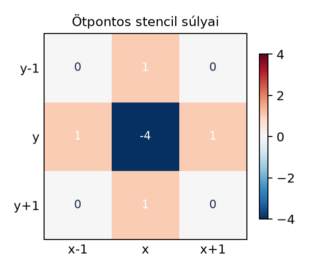

A stencil-számítás a rácsokon végzett párhuzamos adatfeldolgozás egyik legalapvetőbb mintája. A tudományos szimulációktól kezdve a képfeldolgozáson át a neurális hálózatok konvolúciós rétegeiig számos alkalmazás visszavezethető arra, hogy egy rendezett rács minden pontján a pont körüli szomszédság értékeiből számítunk új értéket. Ez az alfejezet a stencil fogalmát, a szomszédsági mintát, a peremkezelést és az első hatékony GPU-megvalósítást, a shared memory tilinget vezeti be. A cél, hogy a fogalmakat és a gyakorlati mintát együtt, egy kis ellenőrizhető példán keresztül tanítsa meg.

Legyen adott egy diszkrét rács, például egy -dimenziós tömb. A stenciloperátor minden rácspontra egy rögzített, lokális szomszédság lineáris kombinációját számítja ki. Egydimenziós, sugarú stencil esetén a kimeneti elem
ahol a együtthatók a stencil súlyai. A leggyakoribb 1D-s példa a hárompontos stencil -gyel, például a második derivált közelítése:
Itt a súlyok , , . A szomszédsági minta (neighborhood pattern) azoknak az indexeltolásoknak a halmaza, amelyekre az operátor hivatkozik: . Kétdimenziós ötpontos Laplace-stencilnél a minta a középpont és a négy von Neumann-szomszéd:
A szomszédsági minta itt . A minta előre rögzített, független a rács méretétől, ezért a stencil párhuzamosításra kiválóan alkalmas: minden kimeneti elem ugyanazt a műveletsort kapja, csak a bemeneti indexek tolódnak el. Ezt nevezzük adatpárhuzamos mintának.
A stencil fogalmilag hasonlít a konvolúcióhoz. A matematikai konvolúciónál a kernel tükrözve kerül alkalmazásra, míg a stencilnél (és a mélytanulási keretrendszerek „konvolúciós” rétegeiben is) a súlyok közvetlenül a szomszédsági eltolásokhoz kötöttek: az ilyen művelet valójában keresztkorreláció, tükrözés nélkül. Szimmetrikus súlyoknál (például a Laplace-stencilnél) a kettő megegyezik. Ebben a könyvben a stencil alatt mindig a rögzített szomszédsági eltolásokkal definiált lineáris operátort értjük.
A stencil művelet jellemzői:
Amikor a stencil a rács szélén áll, a szomszédsági minta olyan indexekre hivatkozik, amelyek kívül esnek a rács érvényes tartományán. A peremfeltétel (boundary condition) határozza meg, hogyan kezeljük ezeket a hiányzó értékeket. A leggyakoribb peremfeltételek:
A halo (vagy ghost cell) a tile vagy résztartomány köré másolt extra réteg, amely a szomszédos tartományokból származó adatokat tartalmazza. Elosztott rendszerekben a halo a processzek közötti kommunikációval tölthető fel; egyetlen GPU-n belül a halo a shared memory tile kiterjesztett szegélyét jelenti. Az alfejezetben a halo kifejezést a shared memory tile köré másolt, a szomszédsághoz szükséges plusz elemekre használjuk.
A peremkezelés és a halo fogalma összekapcsolódik. Ha a teljes rácsot több blokkra bontjuk, minden blokk csak a saját kimeneti elemeit számítja, de a bemeneti szomszédsághoz szükség van a szomszédos blokkok határ menti elemeire is. A blokk ezért a saját tartománya köré egy szélességű halo-t másol a shared memóriába. A globális rács szélén a halo elemei a megadott peremfeltétel szerint kerülnek feltöltésre.
A legegyszerűbb CUDA-implementáció minden kimeneti rácspontra egy szálat indít, és a szomszédságot közvetlenül a global memory-ból olvassa. Ez a megoldás kódjában a következő.
// CUDA C++ (C++17), nem fordított illusztráció
// w: a 2*radius+1 súly (w[k + radius]); a hárompontos másodikderivált-stencilnél {1, -2, 1}
// (a h^2 nevezőt a hívó külön kezeli, a kernel a h = 1 egységnyi rácstávolságú alakot számolja)
__global__ void stencil1d_naive(const float* __restrict__ in,
float* __restrict__ out,
const float* __restrict__ w,
int n, int radius) {
int i = blockIdx.x * blockDim.x + threadIdx.x;
if (i >= n) return;
float acc = 0.0f;
for (int k = -radius; k <= radius; ++k) {
int idx = i + k;
if (idx >= 0 && idx < n) {
acc += w[k + radius] * in[idx];
}
// különben a Dirichlet-nulla perem miatt a tag 0
}
out[i] = acc;
}A kernel launch alakja például:
stencil1d_naive<<<(n + 255) / 256, 256, 0, 0>>>(d_in, d_out, d_w, n, 1); // d_w: device tömb {1, -2, 1}A megoldás helyes, de teljesítménye gyenge. Minden kimeneti elemhez globális memóriaolvasás tartozik, és ugyanazokat a bemeneti elemeket a szomszédos szálak újra és újra beolvassák. Az átfedő szomszédság miatt a betöltési utasítások (és az L1-kérések) szintjén a redundancia -szeres. A DRAM-forgalom ennél kisebb lehet, mert a szomszédos szálak ugyanazokat az elemeket az L1/L2 cache-ből is megkaphatják; a modern GPU-kon ezért r=1 stencilnél a naiv kernel gyakran közel azonos sebességű lehet, mint a tiled változat. Hogy a shared memory tiling mennyit nyer, mérni kell. Ezt a változatot használjuk baseline-ként a laborban.
A naiv megoldás további hátránya, hogy a peremfeltételek ellenőrzése
minden szomszéd beolvasásánál elágazást okoz. A rács belsejében a
idx >= 0 && idx < n feltétel mindig igaz (a
perem-ág ritkán fut), de a szélső szálak a warp szintjén divergenciát
okozhatnak. A határkezelést ezért érdemes leválasztani.
A hatékonyabb megoldás a shared memory tiling: a blokk egyszer betölti a saját kimeneti tartományát és a hozzá tartozó halo-t a shared memóriába, majd a szálak onnan olvassák a szomszédságot. Így minden globális memóriaolvasásból származó elem csak egyszer kerül a chipre, a redundáns hozzáféréseket a gyors, on-chip shared memory szolgálja ki.
A tiling fogalma: a rácsot kimeneti tile-okra bontjuk. Egy blokk egy méretű kimeneti tartományt számít ki. A bemenethez szükséges adat a tile plusz a stencil sugara a tile minden oldalán. Ez a kiterjesztett tartomány a shared memory-ba kerül. A shared memory mérete tehát
elem, ahol és a block dimenzió. Egydimenziós esetben a méret .
A betöltés után blokk szintű szinkronizáció szükséges, mert az egyik
szál által betöltött halo-elemet egy másik szál fogja olvasni. A CUDA
__syncthreads() hívása biztosítja, hogy minden shared
memória írás láthatóvá váljon a blokk összes szála számára, mielőtt a
számítás elkezdődik.
A tiled megoldás pszeudokódja 2D-ben:
__syncthreads().Az 1D-s tiled kernel első, szándékosan hibás
változata az alábbi. A példa hárompontos stencilt használ, ahol
,
és a peremfeltétel Dirichlet-nulla. A kódban a betöltés hibás (hiányzik
a jobb oldali halo); a javított változat a
stencil1d_shared_v2.
// CUDA C++ (C++17), nem fordított illusztráció
// HIBÁS MINTA – NE MÁSOLJA: a jobb oldali halo két eleme (s[blockDim.x], s[blockDim.x+1]) sosem töltődik be
__global__ void stencil1d_shared(const float* __restrict__ in,
float* __restrict__ out,
int n) {
extern __shared__ float s[];
int tid = threadIdx.x;
int i = blockIdx.x * blockDim.x + tid;
int radius = 1;
int tile_size = blockDim.x;
// a kiterjesztett tartomány kezdő globális indexe
int gi = blockIdx.x * blockDim.x - radius + tid;
// betöltés a global memory-ból, peremkezeléssel
if (gi >= 0 && gi < n) {
s[tid] = in[gi];
} else {
s[tid] = 0.0f; // dirichlet perem
}
__syncthreads();
if (i < n) {
// s[tid] = bal szomszéd, s[tid+1] = középső elem, s[tid+2] = jobb szomszéd
float acc = s[tid] - 2.0f * s[tid + 1] + s[tid + 2]; // 3-pontos stencil, r=1
out[i] = acc; // (az s[tid+2] a hibás kernelben nem inicializált lehet)
}
}A launch:
int threads = 256;
int shared_bytes = (threads + 2) * sizeof(float);
stencil1d_shared<<<(n + threads - 1) / threads, threads, shared_bytes, 0>>>(d_in, d_out, n);Itt a shared memória hossza threads + 2 * radius, tehát
threads + 2. A szálak az s[tid] (bal
szomszéd), s[tid+1] (középső elem) és s[tid+2]
(jobb szomszéd) elemeket olvassák. A betöltésnél minden szál egy elemet
tölt be (s[tid]), de a kiterjesztett tartomány hossza
blockDim.x + 2, tehát az s[blockDim.x] és
s[blockDim.x+1] elemek, a jobb oldali halo, sosem íródnak:
az utolsó két szál nem inicializált értéket olvas. A hiba tünete a
blokkhatárokon megjelenő hibás értékek; a CPU-referenciával való
összevetés megfogja (a compute-sanitizer
initcheck/racecheck eszközei is jelezhetik,
ennek támogatása verziófüggő, ezért a könyv kimenetet nem közöl). A
helyes megvalósításhoz a szálaknak ciklikusan be kell tölteniük a
kiterjesztett tartományt: ez a következő, v2 kernel, amely
egyben a labor kiindulópontja.
A helyes betöltési minta 1D-ben:
// CUDA C++ (C++17), nem fordított illusztráció (a hibás minta javított változata)
__global__ void stencil1d_shared_v2(const float* __restrict__ in,
float* __restrict__ out,
int n) {
extern __shared__ float s[];
int tid = threadIdx.x;
int i = blockIdx.x * blockDim.x + tid;
int radius = 1;
int tile_size = blockDim.x;
int s_size = tile_size + 2 * radius;
// ciklikus betöltés: minden szál több elemet is betölthet
for (int j = tid; j < s_size; j += blockDim.x) {
int gi = blockIdx.x * blockDim.x - radius + j;
s[j] = (gi >= 0 && gi < n) ? in[gi] : 0.0f;
}
__syncthreads();
if (i < n) {
// s[tid] = bal szomszéd, s[tid+1] = középső elem, s[tid+2] = jobb szomszéd
out[i] = s[tid] - 2.0f * s[tid + 1] + s[tid + 2];
}
}A v2 és a naiv kernel (súlyok {1, -2, 1})
ugyanazt a függvényt számolja, ezért a kimenetek összevethetők egymással
és CPU-referenciával (az eltérés elvárt értéke 0 vagy néhány ULP). Itt a
for ciklus biztosítja, hogy a teljes s_size
elemet feltöltsük, függetlenül attól, hogy blockDim.x
kisebb, mint a kiterjesztett méret. Ez a minta általánosan használható
1D és 2D esetben is.
A 2D-s tiled kernel sematikusan a következő. A példa 5-pontos Laplace-stencil, , Dirichlet-nulla peremmel.
// CUDA C++ (C++17), nem fordított illusztráció
#define TILE_X 32
#define TILE_Y 32
#define RADIUS 1
__global__ void stencil2d_5point_shared(const float* __restrict__ in,
float* __restrict__ out,
int width, int height) {
extern __shared__ float s[];
int tx = threadIdx.x;
int ty = threadIdx.y;
int x = blockIdx.x * TILE_X + tx;
int y = blockIdx.y * TILE_Y + ty;
int s_pitch = TILE_X + 2 * RADIUS;
int sx = tx + RADIUS;
int sy = ty + RADIUS;
// a kiterjesztett tartomány globális mérete
int s_w = TILE_X + 2 * RADIUS;
int s_h = TILE_Y + 2 * RADIUS;
// ciklikus betöltés a blokk minden szálával
for (int j = ty * blockDim.x + tx; j < s_w * s_h; j += blockDim.x * blockDim.y) {
int local_x = j % s_w;
int local_y = j / s_w;
int gx = blockIdx.x * TILE_X - RADIUS + local_x;
int gy = blockIdx.y * TILE_Y - RADIUS + local_y;
if (gx >= 0 && gx < width && gy >= 0 && gy < height) {
s[local_y * s_pitch + local_x] = in[gy * width + gx];
} else {
s[local_y * s_pitch + local_x] = 0.0f; // dirichlet perem
}
}
__syncthreads();
if (x < width && y < height) {
float center = s[sy * s_pitch + sx];
float left = s[sy * s_pitch + (sx - 1)];
float right = s[sy * s_pitch + (sx + 1)];
float up = s[(sy - 1) * s_pitch + sx];
float down = s[(sy + 1) * s_pitch + sx];
out[y * width + x] = -4.0f * center + left + right + up + down;
}
}A kernel launch alakja:
dim3 block(TILE_X, TILE_Y);
dim3 grid((width + TILE_X - 1) / TILE_X, (height + TILE_Y - 1) / TILE_Y);
int shared_bytes = (TILE_X + 2) * (TILE_Y + 2) * sizeof(float);
stencil2d_5point_shared<<<grid, block, shared_bytes, 0>>>(d_in, d_out, width, height);A kódban a shared memória elrendezése az s_pitch
sorhosszal történik, ami
elem. Ez nem padding, hanem a halo miatt szükséges sorhossz. Bank
conflict-ot a bemutatott hozzáférési minta nem okoz: egy warp szomszédos
szálai (azonos ty, szomszédos tx) szomszédos 4
bájtos elemeket olvasnak egy sorból, azaz 32 szál 32 különböző bankot ér
el. Padding ott számítana, ahol oszlopirányban, a sorhosszal megegyező
lépéssel olvasnak (például mátrix-transzponálásnál); ezt Nsight Compute
shared memory bank conflict metrikákkal kell mérni, a jelen kernelre nem
szükséges.
Az OpenCL programozási modellje hasonló: a work-group felel meg a CUDA blokknak, a local memory a shared memóriának. Az 1D-s stencil naiv változata OpenCL C-ben:
// OpenCL C, nem fordított illusztráció (azonos stencil: {1, -2, 1}, Dirichlet-nulla perem)
__kernel void stencil1d_naive(__global const float* in,
__global float* out,
__constant float* w,
const int n) {
int i = get_global_id(0);
if (i >= n) return;
float acc = 0.0f;
for (int k = -1; k <= 1; ++k) {
int idx = i + k;
if (idx >= 0 && idx < n) {
acc += w[k + 1] * in[idx];
}
}
out[i] = acc;
}A tiled változat local memóriát használna, a szinkronizációhoz
barrier(CLK_LOCAL_MEM_FENCE) szükséges. Az alfejezet témája
miatt a CUDA-t részletezzük, de az OpenCL-logika ugyanaz.
JAX-ban a stencil gyakran
jax.lax.conv_general_dilated-dal vagy
jax.scipy.signal-al fejezhető ki. Egy 2D
Laplace-stencil:
# Python / JAX, illusztráció
import jax
import jax.numpy as jnp
def laplace_2d(u):
kernel = jnp.array([[0.0, 1.0, 0.0],
[1.0, -4.0, 1.0],
[0.0, 1.0, 0.0]], dtype=jnp.float32)
return jax.lax.conv_general_dilated(
u[None, None, :, :],
kernel[None, None, :, :],
(1, 1),
'SAME'
)[0, 0]Itt a JAX a konvolúció primitívet használja (a
conv_general_dilated tükrözés nélkül, keresztkorrelációként
dolgozik, így a Laplace-kernel közvetlenül megadható; a peremen a
'SAME' nullával tölt ki, ami a Dirichlet-nulla peremnek
felel meg). A háttér (XLA, cuDNN stb.) belső megvalósítása eszköz- és
verziófüggő, tiled megvalósítást ez a kód nem garantál. Az alfejezetben
ez a kód csak illusztráció, nem futtattuk; tényleges futtatásnál a JAX
verzióját és a háttér eszközt rögzíteni kell.
A labor célja, hogy a naiv és a shared memory tiled implementációt összehasonlítsuk. Az alábbi környezeti adatokat a labor előtt rögzíteni kell, és ha nem áll rendelkezésre valós eszköz, helyőrzőt kell használni:
--gpus all,
timeout 60 s, nvidia-smi ellenőrzésA mérési folyamat:
A mérési napló táblázata (üres sablon; a
<kitöltendő> cellákat a saját mérésből kell
kitölteni, a könyv nem közöl futtatott értéket):
| implementáció | futásidő (ms) | szórás (ms) | effektív sávszélesség (GB/s) | occupancy (%) | regiszter/szál | shared memória (B/blokk) |
|---|---|---|---|---|---|---|
| 1D naiv | <kitöltendő> | <kitöltendő> | <kitöltendő> | <kitöltendő> | <kitöltendő> | 0 |
| 1D tiled | <kitöltendő> | <kitöltendő> | <kitöltendő> | <kitöltendő> | <kitöltendő> | (block+2)*4 |
| 2D naiv | <kitöltendő> | <kitöltendő> | <kitöltendő> | <kitöltendő> | <kitöltendő> | 0 |
| 2D tiled | <kitöltendő> | <kitöltendő> | <kitöltendő> | <kitöltendő> | <kitöltendő> | (32+2)*(32+2)*4 |
A mért és a várt eredményt el kell különíteni. A várt eredmény a modellből:
A következő elvárások hipotézisek, amelyeket a mérés megerősíthet vagy cáfolhat:
A laborban a hibakezelés kötelező. Minden CUDA API hívás után
checkCuda makró, a kernel után
cudaDeviceSynchronize és cudaGetLastError. A
hibás kernel izolált környezetben fut, timeouttal.
A stencil implementálásakor a leggyakoribb hibák a következők.
1. Hiányzó __syncthreads() a betöltés és a
számítás között. A shared memóriába írás és az olvasás közötti
sorrend nincs garantálva szinkronizáció nélkül. A helyes megoldás:
__syncthreads() a betöltési szakasz végén, majd a számítási
szakasz végén újabb szinkronizáció, ha a shared memóriát a következő
iterációban újra felülírjuk.
2. Hiányzó vagy hibás peremkezelés. Ha a globális index a rácson kívülre mutat, a memória-hozzáférés nem definiált. A helyes megoldás: a betöltési fázisban a globális index határellenőrzése, és a peremfeltételnek megfelelő érték írása a shared cellába.
3. Nem teljes halo betöltés. Ha a blokk szálainak száma kisebb, mint a kiterjesztett tile mérete, a halo egyes elemei betöltetlenek maradnak. A helyes megoldás: ciklikus betöltési hurok, vagy a blokk méretének a kiterjesztett tile méretéhez igazítása.
4. Bank conflict a shared memóriában (oszlopirányú hozzáférésnél). Ha egy warp szálai olyan címeket érnek el, amelyek egymástól 32 szóval (vagy többszörösével) távol vannak (például egy 32 széles shared tömb oszlopát olvassák), azonos bankba esnek, és a hozzáférés sorosodik. Ilyenkor a sorhossz paddingolása (például +1 elem) segít. A jelen stencil soronkénti, szomszédos szálakhoz szomszédos címet rendelő hozzáférése conflict-mentes, ezért itt padding nem szükséges; a 34 elemes sorhossz a halo miatti méret.
5. Divergencia a peremfeldolgozásnál. Ha a peremkezelés a számítási fázisban marad elágazásként, a warp szintjén a szélső szálak eltérő útvonalat járnak be. A helyes megoldás: a peremkezelést a betöltési fázisba helyezni, ahol a feltétel csak a globális indexre vonatkozik, és a számítási fázisban már nincs elágazás.
6. Helytelen shared memória méret a launch-nál. Ha a
launch harmadik paramétere kisebb, mint a kernel által használt
extern __shared__ tömb mérete, a futás hibát okoz vagy
csendesen hibás eredményt ad. A helyes megoldás: a méretet egyértelműen
kiszámítani, és a launch-nál átadni.
A stencil-számítás a rácsos adatfeldolgozás alapmintája, amelyben minden kimeneti pont egy rögzített szomszédsági mintából számolódik. A naiv globális memóriás implementáció helyes, de a redundáns beolvasások miatt sávszélesség-korlátos. A shared memory tiling a tile-t és a halo-t egyszer tölti be a shared memóriába, majd onnan szolgálja ki a szomszédsági hozzáféréseket. A peremkezelést a betöltési fázisban kell elvégezni, a számítási fázisban pedig a blokk szintű szinkronizáció után a szálak a shared memóriából dolgoznak. A labor 1D és 2D stencil összehasonlítását írja elő, ahol a baseline a naiv kernel, az optimalizált változat a tiled kernel. A mérést a könyv konvenciói szerint warm-up-pal, ismétlésekkel, szórással és a valós hardverkörnyezet rögzítésével kell elvégezni.
A következő alfejezet erre az alapra épít, és a halo-cserét, valamint a többblokkos stencil végrehajtást tárgyalja, ahol a globális rács mérete nagyobb, mint egyetlen shared memory tile.
A fenti, stencil1d_shared_v2 kernelben az egyetlen
__syncthreads() hívást elhagyjuk. Mi történhet, és miért?
Hogyan változna a helyzet, ha a kernel egy időlépés-ciklusban többször
töltené újra és írná felül ugyanazt a shared tömböt (például iterált
Jacobi-lépések egy blokkon belül)? Hány __syncthreads()
kell egy ciklusiterációban?
Válaszvázlat: a szinkronizáció nélkül egy szál olvashat olyan shared elemet, amelyet egy másik szál még nem írt be (versenyhelyzet, érvénytelen érték), különösen a halo elemeknél, amelyeket más szál tölt be, mint amelyik olvassa. Ciklusban két szinkronizáció kell: egy a betöltés után (olvasás előtt), egy az olvasás után, mielőtt a következő iteráció betöltése felülírja a tömböt (különben egy gyors szál felülírhat egy elemet, amelyet egy lassabb szál még olvas).